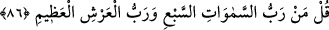
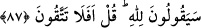
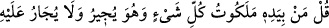
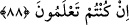

Bunu îtiraf ettikleri zaman onları azarlamak üzere “Öyle ise siz hiç düşünüp taşınmaz
mısınız!” yâni böyle söylüyorsunuz da yeryüzünü ve onda bulunanlar ilk olarak
yaratanın ikinci olarak tekrar yaratmaya kâdir olduğunu hiç düşünmüyor musunuz?
Bilakis akılların yapacağı kıyasta durum bunun aksidir. “de.”
86. “Yedi kat göklerin Rabbi, azametli Arş’ın Rabbi kimdir?” diye sor.
Soru sorma emrinde aşağı ve küçük olandan daha yüksek ve büyük olana doğru
çıkılmıştır. Çünkü gökler ve arş yeryüzünden daha büyüktür. Ancak bundan göktekilerin
yeryüzündekilerden daha üstün olması lâzım gelmez. Açıktır ki böyle olsaydı melekler
beşer cinsinden efdal olmuş olurdu.
87. “(Bunlar da) Allah’ındır” diyecekler. “Şu halde siz Allah’tan korkmaz
mısınız!” de.
Bunlar da “Allah’ındır” diyecekler.”
Burada “Allah’tır” değil de “ (Allah’ındır)” diye “lâm” ile cevap verilmesi, sorunun
mânâsına nazarandır. Çünkü “Rabb’i kimdir?” ve “O kime âiddir?” soruları aynı
mânâya gelir. Yâni “Bunun Rabb’i kimdir?” dediğin zaman bunun mânâsı “Bu
kimindir?” demektir. Bu sorunun cevabı da: “Fülânındır” şeklindedir.
Onları azarlamak için: “Şu halde siz Allah’tan korkmaz mısınız!” yâni böyle
olduğunu bilirsiniz de bu bilginin gereğiyle amel etmeyerek O’nun azâbından korkmaz
mısınız? Çünkü O’nu inkâr ediyorsunuz, öldükten sonra diriltilmeye inanmıyorsunuz ve
rubûbiyyet konusunda O’na ortak kabul ediyorsunuz “de!
Yukarıdaki âyetlerde tezekkür (düşünme), takvâdan (Allah’tan korkmaktan) önce
zikredilmiştir. Çünkü insanlar tezekkür (düşünme) ile ma‘rifete ulaşırlar. O’nu
tanıdıktan sonra da O’na muhâlefetten sakınmaları gerektiğini bilirler.
88. “Eğer biliyorsanız (söyleyin), her şeyin melekûtu (mülkiyeti ve yönetimi)